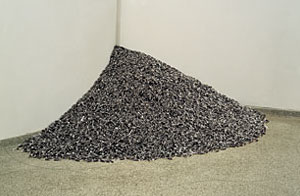

heap
Allan Kaprow
Untitled, 1959Ben Vautier
Sand Heap, 1962Bernar Venet
Charcoal Pile, 1963
Wim T. Schippers
Shattered Glass Pile, 1965
["Spel van glas en licht",
De Ploeg, Bergeyk]Michelangelo Pistoletti
Venere degli Stracci, 1967
"[...] Other artists were more concerned with allowing materials rather than systems to determine the form of their work, reflected in the ubiquity of temporary "piles" of materials around 1968 (done by, among others, Andre, Baxter, Beuys, Bollinger, Ferrer, Kaltenbach, Long, Louw, Morris, Nauman, Oppenheim, Saret, Serra, Smithson). [...]"
Lucy R. Lippard: "Preface" In: Six Years: The dematerialization of the art object from 1966 to 1972.
London: Studio Vista, 1973, p. 5.
Reiner Ruthenbeck
Aschehaufen, 1968
Schwarzer Papierhaufen, 1970
Weisser Papierhaufen, 1979
Robert Smithson
Map of Glass (Atlantis), 1969
Chalk and Mirror Displacement, 1969
Nonsite, 1969
Mirror with crushed shells, 1969
Jannis Kounellis
Pietra, 1969Hans Haacke
Beach Pollution, 1970Michael Heizer
Dragged Mass Displacement, 1971
herman de vries
toevallige stapeling, 1973Giuseppe Penone
Patate, 1977Wolfgang Laib
Die Fünf Unbesteigbaren Berge, 1984Felix Gonzalez-Torres

Untitled (Public Opinion), 1991Thomas Rentmeister
Ohne Titel, 2005
Ohne Titel, 2006


.jpg)